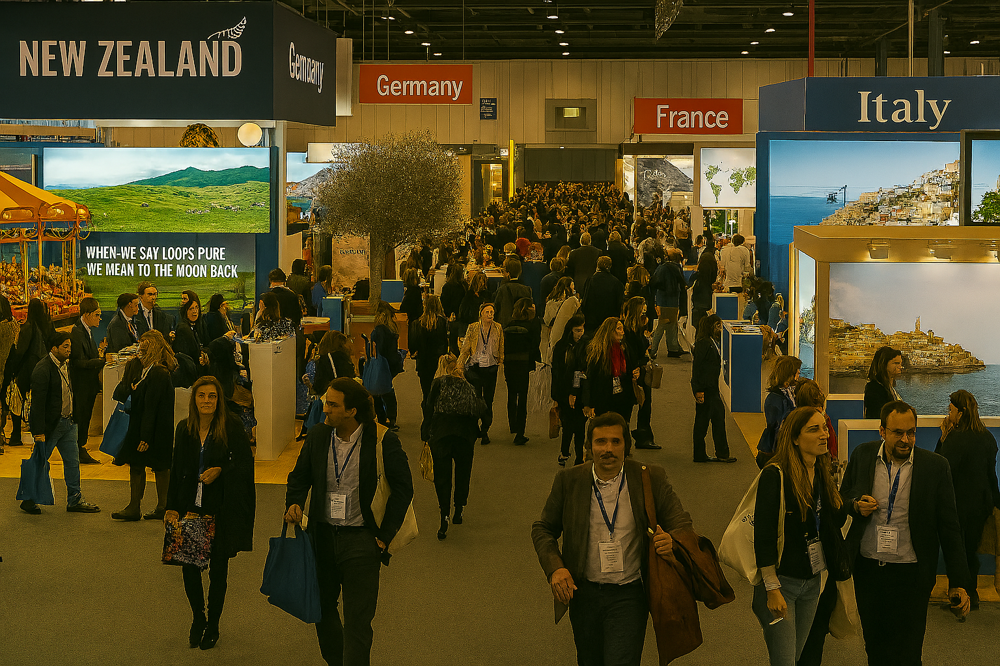

Bienvenido a la Feria de Viajes en Euskal Herria
La feria de viajes de Euskadi es un evento que anualmente se organiza en Bilbao en el mes de Junio para exponer todo lo relacionado con la cultura, turismo y gastronomía de cada país.Así, los viajeros que pueden conocer que se encontraran en el destino elegido.
Qué encontrarás
- Expositores nacionales e internacionales
- Conferencias sobre turismo
- Degustaciones gastronómicas
- Visitas guiadas